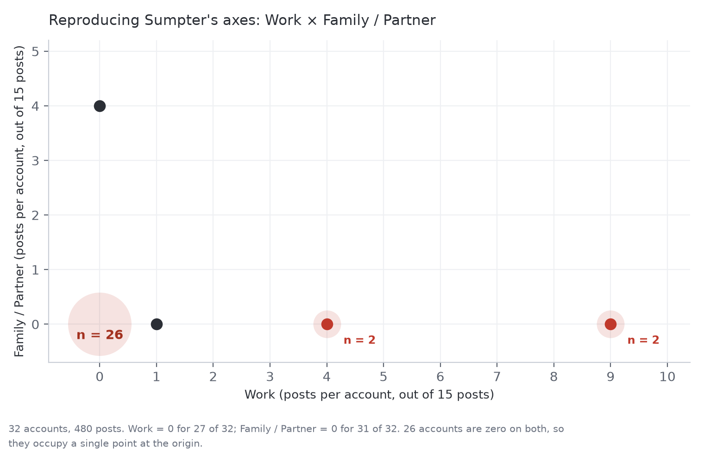
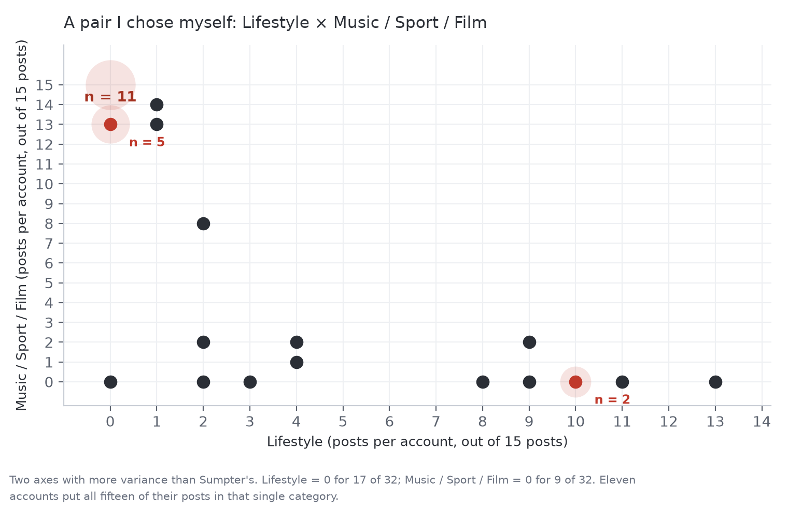
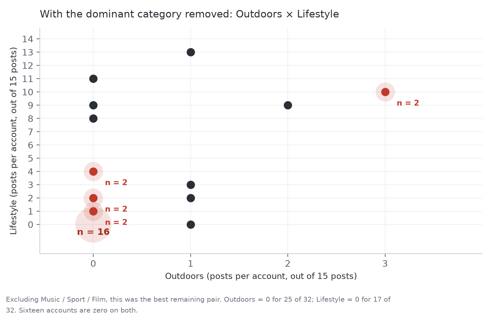
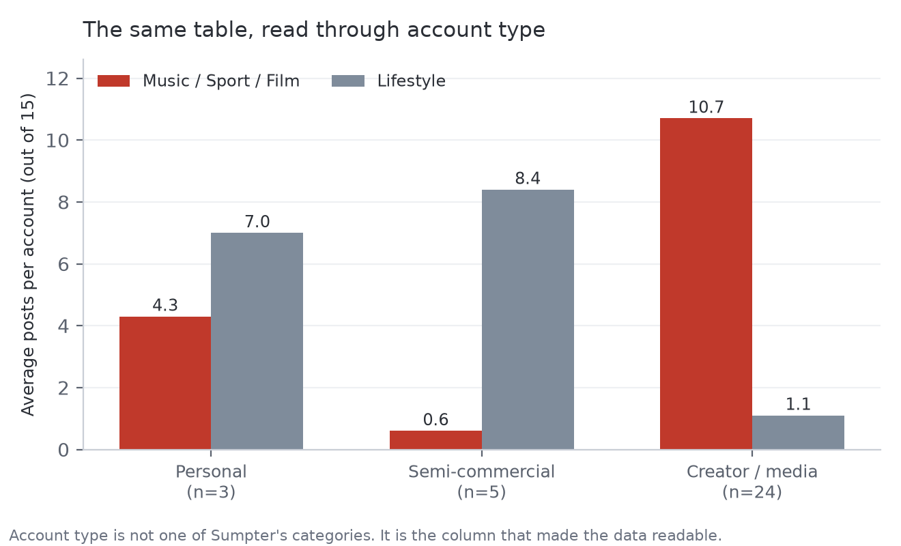
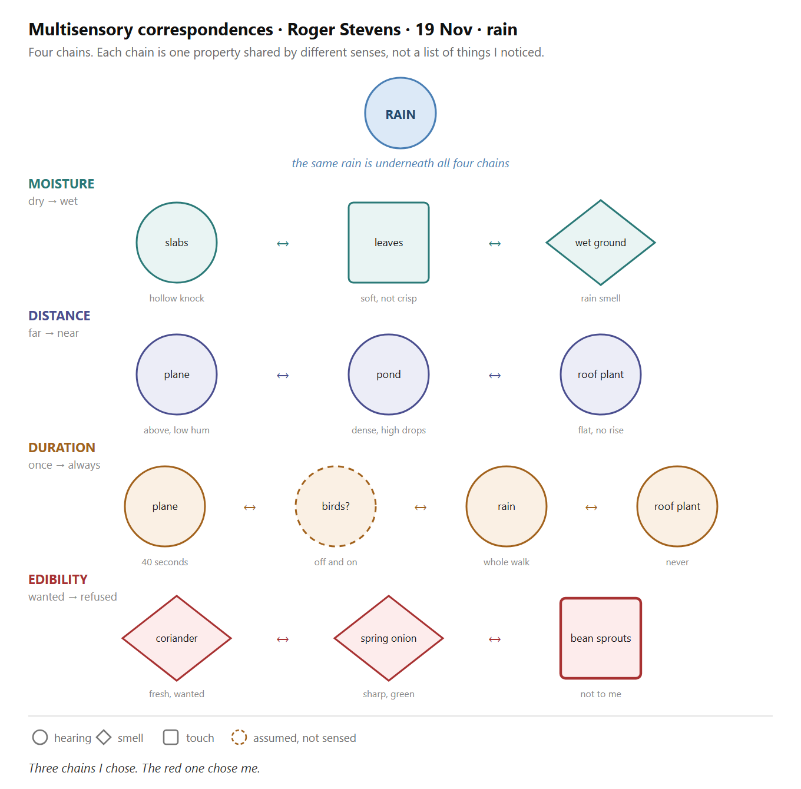
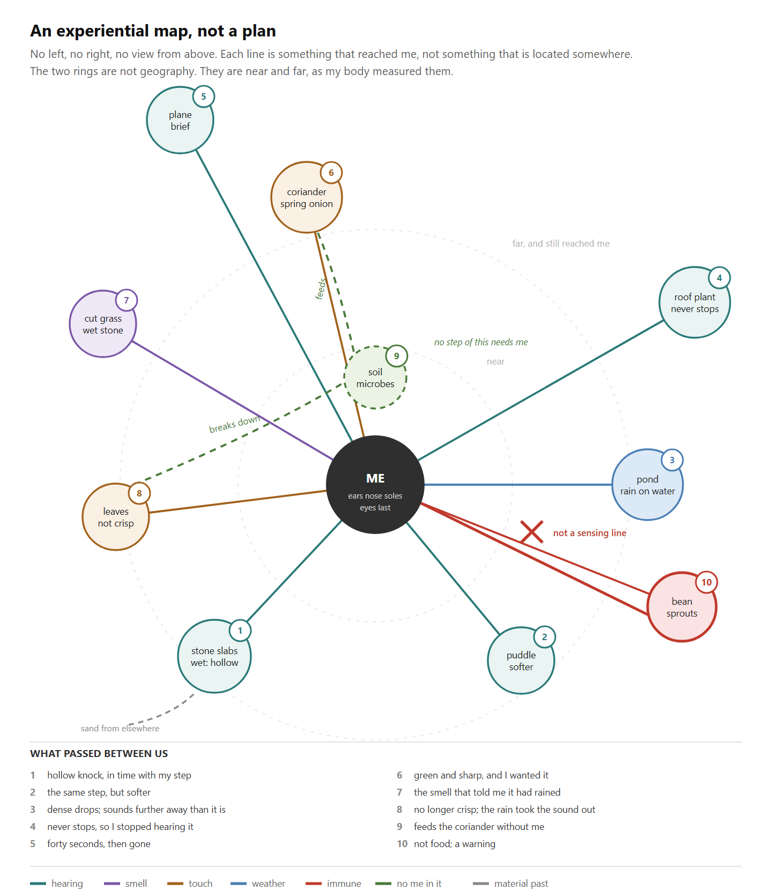

Hi, I'm Zhiqi Yao, a postgraduate student on the MA Digital Media programme at the University of Leeds.
This is my online portfolio, where I collect the work I create during my studies — websites, digital projects, and reflections on what I learn about digital media.
I love playing football and I spend a lot of time on social media like Douyin. This everyday experience made me curious about one question: how do algorithms decide what I see? This curiosity is what brought me to Digital Media.
This week, in my first workshop, I built my own web page using HTML and CSS, and published it online with GitHub Pages. Before this, I had only ever used websites — I had never thought about how they are made.
Two things surprised me. First, a web page is really two files working together: HTML gives the page its structure, and CSS gives it its style. Changing one line of CSS can completely change how the page looks. Second, publishing is not the same as saving. My page was not visible to others until I set up GitHub Pages correctly.
I also made a mistake that taught me something useful. When my website first showed a 404 error, I spent a long time thinking my account had been blocked. In fact, the problem was much simpler — I had typed the wrong address. This reminded me that, in digital work, checking the small details carefully is as important as understanding the big ideas.
This task connected to our reading on algorithms. Building a page myself made me realise that the internet is not a neutral space — it is made of choices, and now I am starting to understand how those choices are made.
This week I used the Web Scraper browser extension to build my first dataset, by scraping the BBC iPlayer homepage. I created a sitemap, defined a selector targeting the "New & Trending" section, and extracted the titles of five programmes.
The process taught me two things. First, a website is not a "given" object but an assembly of code. Scraping works by reading that code, and my selector had to target the exact HTML container in order to return clean data — a small mistake in the selector and I collected a cookie banner instead of programmes.
Second, and more importantly, I experienced the limitation the workshop kept returning to: scraping can only harvest what the code defines. I could collect the title of a programme, but the tool told me nothing about why the BBC chose to promote it, or how audiences experience it. The data arrived without context, and the meaning still has to come from human interpretation.
A technical struggle was also instructive. My scraper's export options would only flatten all the titles into one cell, or spread them across separate columns, rather than listing them one per row. Getting clean, analysable data meant knowing how to work around the tool's limits — which is itself a research skill, and a reminder that "raw data" is never quite raw.
Our task was to work as a small data analysis company and help a university understand how generative AI affects academic integrity. That question was far too broad to research in a week, so our group narrowed it to something we could actually check: how sixteen UK universities describe the rules students must follow. No survey and no interviews were allowed, so the only source was public policy text — which has the advantage that a reader can open every single cell and check it.
The most useful moment came from a mistake. Our first eight institutions were all Russell Group, and the finding looked clean: not one of them used AI detection software. At the time it read like an industry fact. It was a subset fact. When we added eight post-92 and specialist institutions, Leeds Beckett stated that it had introduced Turnitin's AI detection tool in 2023/24, and the conclusion reversed. What I take from this is that the boundary of a sample is the boundary of a claim: an argument can be internally correct and still only be about the cases you happened to choose.
The hardest step was turning a sentence of policy into a single number. Cardiff Met writes that detection methods "may be utilised", which is neither a use nor a refusal. Our coding frame had no category for "unclear", so the cell became a 0. That is not a weakness in the university; it is a weakness in our frame, and I only noticed it because we argued about that one cell three times.
I also had to accept what the method could not show. Coding silence as 0 leaves 53 per cent of the non-Russell-Group cells empty, but that figure can only be read as "the public text does not say", never as "the university does not care". Keeping those two sentences apart is part of the research rather than a disclaimer added at the end — and it is why the dataset answers what institutions state, not what students experience.

What I learned this week is that a chart is not a picture of data. It is an argument about what counts. We visualised the same sixteen institutions we had coded the week before, and every decision about form also decided what the audience was able to conclude.
The first decision was to keep the empty cells. In our heatmap a grey square means that the public text records nothing at that intersection — a null, not a zero. The easy option was to drop those rows so that the chart looked complete. We kept them, and the argument changed: an absence in a policy document is evidence about the institution, not a hole in our dataset. The cost is honest too, because coding a null as 0 puts "not regulated" and "regulated but never written down" into the same cell.
The second decision concerned grouping. With a Russell-Group-only sample, a stacked bar split by sector told a clean story: no detection anywhere. The grouping did not describe that story, it produced it. Sort the same rows alphabetically instead and the reversal disappears. I had assumed that categories were neutral containers for data; they are part of the claim.
The third decision was the caption. One of our charts shows 25 per cent against 53 per cent, which reads as a governance gap. It is a publication gap, because our data only records what institutions put on the open web. Writing "public text" into the title is an ethical decision rather than a wording preference, and I now think of captions as part of the analysis rather than decoration on top of it.
We also built a ranking of universities by strictness and then deleted it. The data could not support a ranking, and presenting one would have implied a judgement we had no evidence for. Removing something is a design choice as well.


Reading behind these two reflections: D'Ignazio and Klein (2020) Data Feminism; Gitelman and Jackson (2013) 'Raw Data' Is an Oxymoron; Feigenbaum and Alamalhodaei (2020) The Data Storytelling Workbook.
The workshop asked us to try to see how an algorithm understands us. The task was to borrow David Sumpter’s method: take 32 accounts, the fifteen most recent posts from each, and code every post into one of thirteen categories. I ran it on Douyin — 480 posts, coded one at a time, sorted into Family/Partner, Work, Music/Sport/Film, Lifestyle and nine others. The accounts came from the list I follow. That list is not neutral: most of it probably reached me through the recommendation feed, and I did not record account by account which arrived that way and which I went looking for, so the feed’s share in composing this sample is real and unmeasured.
The table collapsed. One category, Music/Sport/Film, took 272 posts — 56.7 per cent of everything. Inside that single box were football highlights, NBA commentary, esports, bodybuilding footage, piano performance, K-pop edits, anime explainers and short dramas: nine kinds of content, counted as one number. My first reaction was that the categories were too coarse. They are. But coarseness is not the interesting part. A scheme has to provide somewhere for what it was not built to hold, and Bowker and Star (1999) call that place a residual category: material is put there and then counted once, under a label that says nothing about it. My table had no such column. So the absorption could not show up as a container. It showed up as concentration instead — nine industries entering a cell named after one of them and leaving as a single figure.
Two categories came back as zero: Politics/News and Activism, out of 480 posts. I do not read that as political disengagement. A zero cannot tell me whether a category is empty in the world or simply never entered my window, and nothing in my design separates the two. This is not the problem Bowker and Star describe. Their residual category is a place the scheme reserves for misfits; my zeros sit in categories I named in advance, which then returned nothing. The two mechanisms run in opposite directions. What they share is narrower and still matters: in neither case can a reader tell what the scheme was unable to see. D’Ignazio and Klein (2020) give that consequence its political form — what gets counted, and how, decides who becomes visible.
Once I had written my own coding rules, I was running a small classification procedure, and Gillespie’s (2014) vocabulary made that concrete. An algorithm is an arrangement of input, rules and output. My input was chosen, my rules were chosen, and my output was a judgement. I was not looking at a platform’s decision. I was making one.
Then the axes failed. Plotted against each other, 26 of the 32 accounts sit at the origin, with zero posts in either Work or Family/Partner out of fifteen. Work is zero for 27 of the 32; Family/Partner is zero for 31 of the 32. The six accounts that are not at the origin reached at most nine posts on Work and four on Family/Partner — out of fifteen. An axis whose highest value is a quarter of its range has not failed to discriminate; it has nothing to discriminate.
Before blaming the choice of axes, I drew the comparison three ways (Figs. 2–4). The original pair collapses. A pair I chose for having variance does spread out — but what spreads is content genres, not a life. And with the dominant category removed, the best remaining pair collapses again. The problem is not which two axes I picked. These axes presuppose a form of social life organised around employment, partnership, family and local community, posted about in the episodic way Sumpter’s categories assume. The account holders are not without work or family; work and family do not appear here in the unit the method counts.





What the table could not say was who was posting. Twenty-four of the 32 accounts are creators or media accounts, five are semi-commercial, three are personal. Creators put 10.7 of their fifteen posts in that one large category; the three personal accounts put 7.0 in Lifestyle. Those two numbers should not be read as a comparison: three accounts is not a category, and one of the three sits close to the creator average anyway. What the split does establish is that the column my table was missing was who this is, not what this is — and that the missing column turned out to be a finding rather than an oversight.
Cheney-Lippold (2017) is the useful contrast here, and the difference is the point. He describes measurable types: categories commercial systems assemble from behavioural data and attach to people without their participation or knowledge, which do not replace the categories those people use about themselves but accumulate as an extra layer of identity. My labels look like his and are not his. “Football analysis channel” does compress a complex account into a countable category, but I wrote the rules, I can be asked why, and nothing was assigned to anyone without their knowing. His account describes a classification running with the lights off. Mine is the same operation with the lights on, where every rule can be interrogated and every output checked against the posts it came from — which is exactly why the failure was visible at all.
Two things this exercise did not do. It did not measure Douyin’s own classification: I examined a coding sheet I built, not a platform’s internals. And a single sweep of each account’s recent posts is a snapshot, not a record of anything stable across time — it is a picture of what was visible in that window, not of who those accounts are.
Reading behind this reflection: Gillespie (2014) The Relevance of Algorithms; Sumpter (2018) Outnumbered; Cheney-Lippold (2017) We Are Data; Bowker and Star (1999) Sorting Things Out; D’Ignazio and Klein (2020) Data Feminism.
This week our group built a detection bot. We were given five short excerpts and asked to estimate, for each one, the probability that it was generated by AI. Our bot, called ECHO, was given one rule: read in layers, and trust them in order. First how sources are used. Then whether the language refers to bodies, places and specific things. The argument last.
We scored the five excerpts at 8, 55, 15, 10 and 85 per cent. The lowest score went to a paragraph that cited a source at page level, including a quotation quoted second-hand with both page numbers present. That is exactly the detail a language model tends to smooth away, and the opening sentence was awkward and bodily in a way that read like a student. The highest score went to a paragraph that listed four sources in one sentence, none of them with a page number, all of them supporting a single abstract claim, and closed on three abstract nouns in a row. The middle score went to the hardest case: the structure was model-like, a theory applied neatly and closed with a stock phrase, but it contained a spelling error. The two signals pointed in opposite directions, so we left it at just above half.
The useful finding was what did not help us. The arguments barely carried any signal at all. In all five excerpts, a human and a model could have made the same argument; what separated them was how the text handled its sources and whether it was willing to be specific about the world. So ECHO is not a test for generation. It is a test for whether a piece of writing sounds like a student’s work, which is a very different thing, and the difference matters because the output is a number that could be used against a person.
I have now spent two weeks building small classifiers. In Week 6 I coded 480 posts into thirteen boxes and watched the boxes describe the wrong object. This week I built a bot that codes sentences into a probability and, again, found that the output describes a style rather than a cause. The structure is the same in both cases. Bucher describes algorithms as configurations of if…then that turn the past into the future; a detector trained on previous student writing will decide what future student writing is allowed to look like. What I did not expect from a methods module is that the most important thing I would learn is not how to build these tools but how to say precisely what they are unable to measure.
Reading behind this reflection: Bucher (2018) If…Then; Gillespie (2014) The Relevance of Algorithms; D’Ignazio and Klein (2020) Data Feminism.
The workshop started with a plate of things on the table and one instruction: look first. The tutor said that in English we eat with our eyes — looking is not neutral preparation, it sets up what you expect the other senses to give you. Only after that were we allowed to close our screens, touch, smell and taste. Then she asked us to stand on one leg with our eyes shut, and to put a hand behind our backs and say where it was. Two more senses, before we had even gone outside: the vestibular sense, which tells you that you are falling, and proprioception, which tells you where your own arm is without looking at it. Her reason for starting there was that everything we make digitally is a translation of something that first existed as a bodily experience — and that if you begin with the software instead of the experience, the software quietly decides what you are able to imagine.
I chose sound. Almost everything I heard was under my feet: stone slabs knocking hollow, one after another, and then a puddle, which was softer, so the same step made two different sounds. Above that there was a plane, far away. Beside me, on the roof of the next building, a machine that never stopped. My ears gave me three layers at once — under me, over me, beside me — and I could not have told you that with my eyes open, because with my eyes open it is just a corridor. Then I opened my eyes. There was a plate of bean sprouts directly in front of me, and I am allergic to beans. My eyes did not add information to the walk. They added a warning.
Turning that into a map was harder than collecting it. A line has to be drawn from somewhere, and the obvious place to draw it from is above. The tutor called this the God’s eye trick: the only one who sees from above is God, and what a view from above does is remove the people. My ears had never given me a left and a right. They had given me near and far, and the far kept changing, because the path curls back on itself and you have to walk out the way you came in.
What the exercise assumes is a body that can be used as an instrument. Two things in that room undid the assumption. We were told not to close our eyes outdoors — too dangerous — and to work in pairs, one blind, one watching. So vision was never switched off; it was handed to somebody else. And a classmate noticed that she only heard the rain because of her coat, which the tutor immediately renamed: an extra sensory mechanism through which you can hear something else. The sensing body is never bare. Mine was wearing shoes and carrying a phone, and it also had an immune system, and the immune system drew one line on that map that my attention had nothing to do with.
That is the part I keep. The tutor said that we each represent what we feel differently because we each feel differently, and that it is fine for a map not to be for everyone. She also said that you can walk the same route again and it will come out different, because the things seen from above are not temporal, while your experience of the world is. So the map is not a record of Roger Stevens. It is a record of one body inside it at one moment — allergic, shod, slightly cold. Terra Forma’s phrase for this is not a point of view but a point of life, and after this week I can see why they needed a different word.


Reading behind this reflection: D’Ignazio and Klein (2020) Data Feminism; Aït-Touati, Arènes and Grégoire (2022) Terra Forma; Ingold (2000) The Perception of the Environment; Barad (2007) Meeting the Universe Halfway.